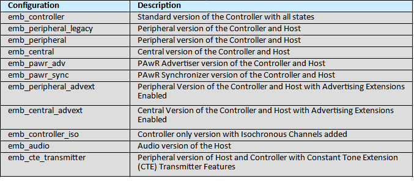
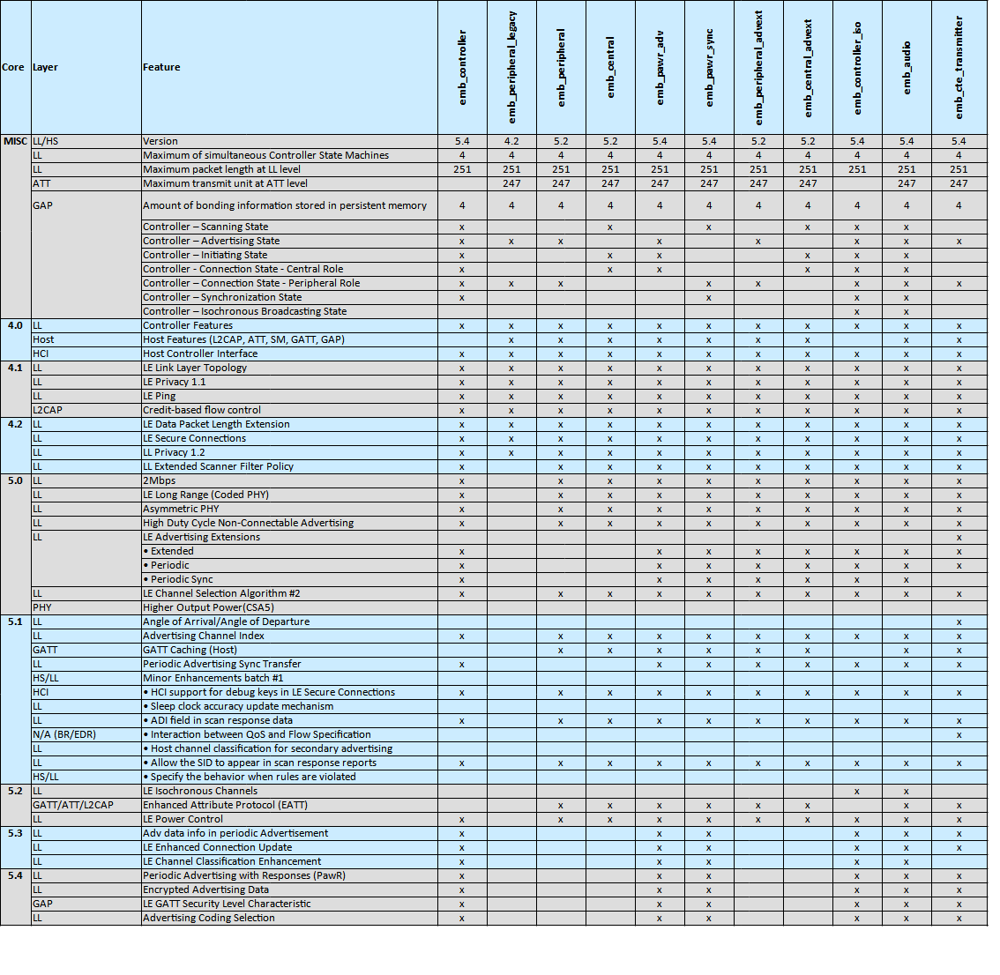

Bluetooth
The EM9305 SDK provides an implementation of the Bluetooth Host stack and Controller that can be integrated within an end user application to bring up Bluetooth low energy connectivity. The controller layer can be used without the host. In such a case, the device is turned into a controller only receiving HCI commands from a host running on another device. In this case, the communication is done through the UART, USB or SPI communication bus. On the other hand, the whole stack including the host can be used to have a full featured standalone BLE system on chip. Thus, some profiles can be setup depending on the type of application that has to be implemented. Examples of such profiles are FIT or HRS for example.
The SDK comes along with a variety of sample application to showcase how to implement different profiles:
FIT (fitness tracker)
HRS (heart rate sensor)
DTS (data transfer server)
TAG (a simple tag)
RPA (Resolvable Private Address basic functionality)
As an example provided in the SDK, the sample application projects/nvm_emb_fit shows how to build a SoC (system on chip) application that exposes the Heart Rate Service as well as the Running Speed and Cadence Service. In this example, using the RSC Service will initiate the pairing procedure.
Warning
The selection of the desired Bluetooth Host and/or Controller configuration is made with the use of the appropriate libraries (e.g., emb_ll_controller for controller only) in the ARC_LINK_LIBRARIES CMake Macro as well as the appropriate configuration file in the CMakeList.txt file of the project. The configuration file is selected by adding the appropriate configuration directive (e.g. ${EMB_CONTROLLER_CONFIG}) for a given target with the CMake Macro ADD_TARGET_COMPILE_FLAGS_ALL_BUILD_CONFIGS. Refer to the CMakeList file content of available projects used as sample applications.
Warning
Modification of the content of the CMake variables EMB_BLE_STD_CONFIG will not affect the behavior of the pre-compiled libraries. It is therefore not recommended to modify these variables.
Bluetooth Declaration ID and QDID
Controller
Declaration ID: D067886
QDID: 244581
Host
Declaration ID: D065604
QDID: 223785
Bluetooth Configurations and Features
The table below lists the prebuilt Bluetooth LE configurations provided in the SDK.
The table below shows the supported features of the em|bleu Bluetooth LE stack for both the host and the controller according to the various Bluetooth LE core specification versions.
em|bleu documentation
em|bleu Lite documentation
The EMB Lite documentation can be reached using this link: EMB Lite.